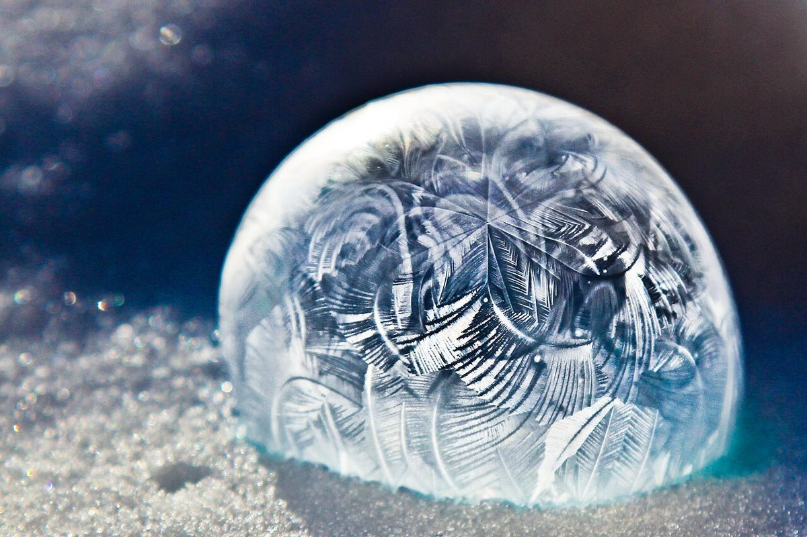

口コミ
こんなひと言があるかも
カフェという業種から想像できるひと言を、制作側が創作したものです。
以下は制作側が考えた創作のイメージ例で、実在のお客様の投稿ではありません。実際の口コミとは関係ありません。
営業時間などが分かったら、行ってみたいです。それまでは、Instagramの更新を楽しみにしています。
まずはInstagramをのぞいてみたいです。どんなお店なのか、少しずつ知っていけたらうれしいです。
お店のことを知ったら、いつか行ってみたいと思います。そのときを楽しみに待っています。
